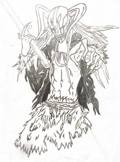

Here you will see the journey I took learning all kinds of new things during this course split up in different sections:
During the first 2 weeks we learned about AI and UX and how we implemented them into our daily lifes. We might not actively think about it, but it exist all around us. An example for AI would be the Youtube algorithm thats tracking what kind of videos we watched, so they can put out a better recommendation list for you. An example for UX would be advertisement of a product so that a user will be more eager to buy the product shown. This example also would give you a closer look what the job is for an UX designer. One of their jobs is to make the product appealing enough, to the point that the consumers (people) wants to buy it.
Then we had to think about examples of good and bad experience with a product. My choice for this was the "kikkoman soja bottle"; The good experience was that holding 1 of the 2 holes can change the amount of soja sauce that pours out. The bad experience is that you cant bring it for traveling since you can't close the lid.
In week 3 t/m 5 we were assigned to groups and had to task to deepen into some kind of service. Since our group plays the game league of legends, we thought about going more in dept with it. We began with observation of this topic and followed up with a survey to get to know how people that played the game has experienced it so far. After that we went more in dept by gathering the results and started doing interviews about this topic. The moment we gathered the information of all sorts we made persona's out of them
Fast forwarding in week 7 + 8 we had ideas of making an application where it will gives you recommendations what champion you pick against what opponents in league of legends.
Here you will see the sketches and diagram
And a link to the --PROTOTYPE--
Here I will showcase the webstructure of this website.
I started off by making a sitemap and worked my way down to making a simplistic wireframe
After that I started working on the html and in the end with css
So far I only tested it out in Microsoft edge.
In my own free time I like to learn new music instruments and draw characters.
While I can't really show anything about the instruments, I will put in some pictures of my drawings
